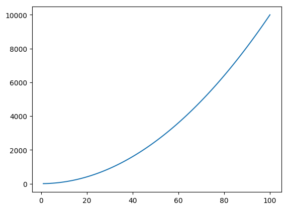
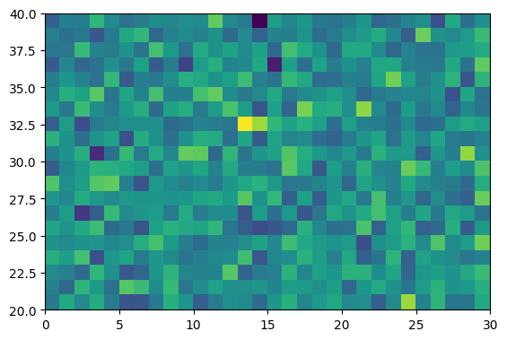

A quick introduction to the Julia language
Getting started
Start an interactive Julia session by running julia from the command line. You can quit the session with quit(). Generally, all functions in Julia are run using parenthesis, even if there are no input arguments.
pwd()
"/home/philipp"
whos()
Base Module
Compat 19502 KB Module
Core Module
IJulia 19567 KB Module
JSON 19384 KB Module
Main Module
MbedTLS 19412 KB Module
Nullables 1120 bytes Module
ZMQ 19357 KB Module
You can define Julia scripts as regular text files that end with .jl and use your favourite text editor to code. Once you have your script, e.g.:
hello-world.jl
println("Hello world")
you can run the script with include("hello-world.jl").
The Julia REPL
REPL stands for Read/Evaluate/Print/Loop and refers to the interactive Julia session (it's just like a Matlab session). It's good for experimenting, but any serious coding should be done using scripts instead.
42
42
4 + 5
9
100 / 5;
Unlike Matlab, you can access Julia's help functions by typing the question mark, followed by the function that you want the documention of:
? quit
search: [1mq[22m[1mu[22m[1mi[22m[1mt[22m [1mQ[22m[1mu[22m[1mi[22mckSor[1mt[22m Partial[1mQ[22m[1mu[22m[1mi[22mckSor[1mt[22m [1mq[22m[1mu[22mant[1mi[22mle [1mq[22m[1mu[22mant[1mi[22mle!
quit()
Quit the program indicating that the processes completed successfully. This function calls exit(0) (see exit).
Similarly, you can enter the shell mode by typing ;, which gives you access to a full bash terminal.
; pwd
/home/philipp
In contrast to Matlab, Julia treats all operators as functions. This means you can add two numbers in either of the two ways:
a = 4 + 5
9
a = +(4, 5)
9
The same applies for any other operations, such as subtraction, multiplications etc. Some math constants are defined in Julia by default, such as:
print(pi)
π = 3.1415926535897...
Julia was designed with the intend to write code that resembles mathematics as close as possible. For example, you can omit the multiplication operator when working with variables:
x = 5
2x + 4 # which is the same as 2*x + 4
14
Just as Matlab, but different than Python, Julia comes with many built-in math functions that you would need for everyday use:
sin(pi / 2)
1.0
log(100)
4.605170185988092
exp(4.3)
73.69979369959579
rand()
0.5282624241978122
Packages and Plotting
Packages provide additional functionalities, that are not included in core Julia. Packages are written both by official Julia programmers, as well as anyone else who programs in Julia.
Since native Julia does not include any plotting tools, we have to download a third-party package, such as PyPlot or Plots:
Pkg.add("PyPlot")
[1m[36mINFO: [39m[22m[36mInstalling JUDI v0.1.0
[39m[1m[36mINFO: [39m[22m[36mBuilding Dierckx
[39m
make: Nothing to be done for `all'.
[1m[36mINFO: [39m[22m[36mBuilding Conda
[39m[1m[36mINFO: [39m[22m[36mBuilding PyCall
[39m[1m[36mInfo: [39m[22m[36mPyCall is using /home/philipp/GATechBundle/Miniconda3/bin/python3 (Python 3.6.6) at /home/philipp/GATechBundle/Miniconda3/bin/python3, libpython = /home/philipp/GATechBundle/Miniconda3/lib/libpython3.6m
[39m[1m[36mInfo: [39m[22m[36m/home/philipp/.julia/v0.6/PyCall/deps/deps.jl has been updated
[39m[1m[36mInfo: [39m[22m[36m/home/philipp/.julia/v0.6/PyCall/deps/PYTHON has been updated
[39m[1m[36mINFO: [39m[22m[36mPackage database updated
[39m[1m[36mINFO: [39m[22m[36mMETADATA is out-of-date — you may not have the latest version of PyPlot
[39m[1m[36mINFO: [39m[22m[36mUse `Pkg.update()` to get the latest versions of your packages
[39m
Once you have downloaded a package, you can use it by typing:
using PyPlot
This plotting package is based off Python's Matplotlib package and therefore shares much of the Syntax. Some common plotting commands include:
x = 1:100;
f = x .^ 2;
plot(x, f)

1-element Array{PyCall.PyObject,1}:
PyObject <matplotlib.lines.Line2D object at 0x7f4b10781d30>
A = randn(20,30);
imshow(A, extent=[0,30,20,40])

PyObject <matplotlib.image.AxesImage object at 0x7f4b105585c0>
Arrays and tuples
Arrays are defined in a similar fashion to Matlab:
x = [1, 2, 3, 4, 5]
5-element Array{Int64,1}:
1
2
3
4
5
As you can see from the output on the screen, Julia actually cares about types of variables and arrays. Since we defined our array as a collection of integers, the type of our array is `{Int64,1}
y = [1., 2., 3., 4., 5.]
5-element Array{Float64,1}:
1.0
2.0
3.0
4.0
5.0
You can make a vector out of anything, not just numbers. For example, you can collect strings in a vector like this:
s = ["This", "is", "a", "string", "vector"]
5-element Array{String,1}:
"This"
"is"
"a"
"string"
"vector"
s = ["string", 4.0, sin, pi]
4-element Array{Any,1}:
"string"
4.0
sin
π = 3.1415926535897...
Multi-dimensional arrays are formed as follows:
A = [1 2 3 4; 5 6 7 8]
2×4 Array{Int64,2}:
1 2 3 4
5 6 7 8
Note that entries of the same row are separated by spaces and rows are separated by ;
You can also initialize vectors/matrices of a given dimension in various ways:
B = zeros(4,5)
4×5 Array{Float64,2}:
0.0 0.0 0.0 0.0 0.0
0.0 0.0 0.0 0.0 0.0
0.0 0.0 0.0 0.0 0.0
0.0 0.0 0.0 0.0 0.0
C = rand(2,3)
2×3 Array{Float64,2}:
0.189405 0.938612 0.359612
0.553322 0.868266 0.102811
D = ones(4,2)
4×2 Array{Float64,2}:
1.0 1.0
1.0 1.0
1.0 1.0
1.0 1.0
Unlike Matlab, entries of matrices are accessed with square brackets, rather than parenthesis. Index counting starts at 1 (not 0).
C[1,1]
0.1894051459813404
C[1,:]
3-element Array{Float64,1}:
0.189405
0.938612
0.359612
C[1,2:end]
2-element Array{Float64,1}:
0.938612
0.359612
Another useful structure, e.g. for plotting and loops, are range and linspace:
r = 1:2:10
print(typeof(r))
StepRange{Int64,Int64}
l = linspace(4,8.5, 7)
print(typeof(l))
StepRangeLen{Float64,Base.TwicePrecision{Float64},Base.TwicePrecision{Float64}}
You can convert the vectors r and l to regular Julia arrays using the collect function:
collect(r)
5-element Array{Int64,1}:
1
3
5
7
9
collect(l)
7-element Array{Float64,1}:
4.0
4.75
5.5
6.25
7.0
7.75
8.5
Similar to Matlab, it is possible to reshape arrays or stack multiple arrays to form new matrices:
A = randn(3,4)
3×4 Array{Float64,2}:
0.509555 -1.79653 0.842718 -0.713901
-0.0580305 0.609266 1.72787 -0.731359
0.10706 2.91134 -1.26744 -0.0453605
reshape(A, 4, 3)
4×3 Array{Float64,2}:
0.509555 0.609266 -1.26744
-0.0580305 2.91134 -0.713901
0.10706 0.842718 -0.731359
-1.79653 1.72787 -0.0453605
vec(A)
12-element Array{Float64,1}:
0.509555
-0.0580305
0.10706
-1.79653
0.609266
2.91134
0.842718
1.72787
-1.26744
-0.713901
-0.731359
-0.0453605
B = [A; A]
6×4 Array{Float64,2}:
0.509555 -1.79653 0.842718 -0.713901
-0.0580305 0.609266 1.72787 -0.731359
0.10706 2.91134 -1.26744 -0.0453605
0.509555 -1.79653 0.842718 -0.713901
-0.0580305 0.609266 1.72787 -0.731359
0.10706 2.91134 -1.26744 -0.0453605
One of the pitfalls of Julia is that assigning an array with the equal sign, does not copy the array, but creates a referece.
A = ones(2,3)
2×3 Array{Float64,2}:
1.0 1.0 1.0
1.0 1.0 1.0
B = A
2×3 Array{Float64,2}:
1.0 1.0 1.0
1.0 1.0 1.0
A[1,:] = 2
println(A)
[2.0 2.0 2.0; 1.0 1.0 1.0]
show(B)
[2.0 2.0 2.0; 1.0 1.0 1.0]
To copy an array, use the copy function
A = ones(2,3)
2×3 Array{Float64,2}:
1.0 1.0 1.0
1.0 1.0 1.0
B = copy(A)
2×3 Array{Float64,2}:
1.0 1.0 1.0
1.0 1.0 1.0
A[1,:] = 2
println(A)
[2.0 2.0 2.0; 1.0 1.0 1.0]
println(B)
[1.0 1.0 1.0; 1.0 1.0 1.0]
We see that B has not been changed!
Some other differences between Matlab and Julia are min and max functions. These functions only return the min/max of two input variables:
min(5,100)
5
To obtain the smallest/largest entry of a vector, use the minimum and maximum functions:
x = [1,2,3,4,5,6]
println(minimum(x))
println(maximum(x))
1
6
Controll Flow
Control flow in Julia, i.e. if/else statements, for loops or while loops, are similar to other programming languages. Here are some examples of different ways of controlling the flow:
for j=1:2:8
println(j)
end
1
3
5
7
for color in ["red", "green", "blue"] # an array
print(color, " ")
end
red green blue
x = 10
while x > 1
x -= 1
println(x)
end
9
8
7
6
5
4
3
2
1
name = "Julia"
if name == "Julia"
println("I like Julia")
elseif name == "Python"
println("I like Python.")
println("But I prefer Julia.")
else
println("I don't know what I like")
end
I like Julia
Functions
Functions are a useful building block to structure your code and build subroutines etc. The most generic way to define functions in Julia is like this:
function my_function(arg1, arg2)
# do some work
end
my_function (generic function with 1 method)
Functions can have any number of input arguments, including none:
function breakfast()
maketoast()
brewcoffee()
end
breakfast (generic function with 1 method)
By default, Julia functions always return the output from the last line of function. By using the return keyword, you can indicate a specific value that should be returned.
function my_func(x, y)
x_new = 2x
y_new = 2y
end
z = my_func(3,4)
8
function my_func(x, y)
return x_new = 2x
y_new = 2y
end
z = my_func(3,4)
6
By grouping results as tuples, it is possible to return multiple variables:
function my_func(x, y)
x_new = 2x
y_new = 2y
return (x_new, y_new)
end
z = my_func(3,4)
(6, 8)